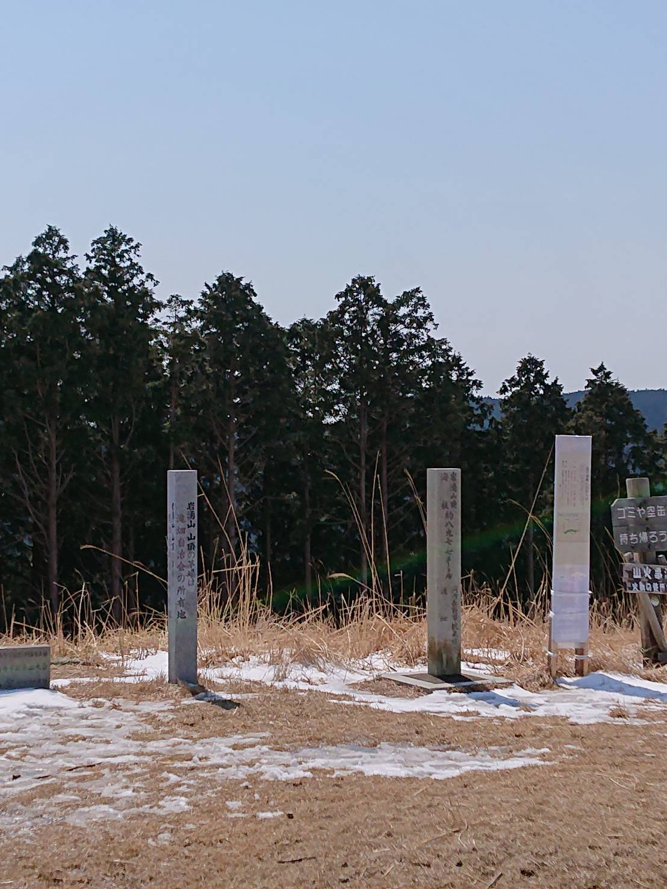

Introduction
現在、大学で電気情報工学を専攻していて、日々プログラミングと英語の勉強に励んでいます。今は共同開発の経験等を重ねて、ハッカソンに出場したいと考えています。

Hobby
山登りなどのアウトドア
中学では野球、高校ではサッカーをやっていて、 運動は苦手ではありません。最近はスポーツに 取り組んではいないものの、筋トレや長期休暇 山登りをする等の運動は継続しています。
Career
２０２０年４月大阪市立大学入学
未来電子でインターン開始
I'm studyding now
To be continued